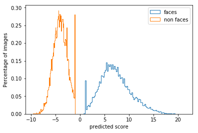

Assignment 5: Face detection with a sliding window
Face Detection
This project aims to classify all the faces from a random image. With the help of sliding window patches in images as object or non-object is determine. The assignment is dived into four parts:
- Getting Positive Features
- Getting Random Negative Features
- Train SVM Classifier
- Mining Hard Negetive Features
- Sliding Window Detector
Getting Positive Features
Here, as this assignment is based on detecting faces, faces are considered as positive sample.
For training every face image from the positive file folder is taken. Firstly, feats array is declared which is a N*D shape matrix.
A nested loop is run through the positive file folder to get all the images. Using load_image_gray function each image is then taken from the folder.
Each image is fed to hog descriptor function to take all the gradient value of the image. Finally, all the gradient value of all images is taken to feature matrix. Using the gradient values, the model is trained to identify faces in any image.
Figure1: Flow chart of get_positive_feature function
For extracting Hog feature the traditional hog feature function is used.
Getting Random Negative Features
Same as before the gradient of background of an image is taken in this step. Firstly, all the imaged is loaded through image_load_gray function. As in these images there is also face available, we will take the gradient of the images using different size of the image to be more precise.
Figure2: Flow chart of getting random negetive feature
The dimension of resized image is chosen randomly. Here, without taking whole image array, an array is being made by image dimension. A nested for loop is being run using 2D image dimension. Using the shape and window size an 2D array is generated for each image. Then from the 2D array hog features are extracted.
Train SVM Classifier
To pass through SVM classifier two attributes X_train and y_train are generated from positive features and negative features. Here, C is the regulation parameter and must be positive. The strength of the SVM regulation is also inversely proportional to C. The hog images are shown in bellow:
Figure3: Hog Feture1
Figure4: Hog Feature2
Mining Hard Negetive Features
This is similar to get_random_negative_features function. But here the trained SVM function is used to mine the gradient of negative features from the feature that are only generated using hog features.
Sliding Window Detector
This process started with assigning the threshold value. Here, by doing try and error the threshold value is kept as lowest as possible.
For this, a list of the scale factor is set to resize the image in a different size. After resizing the hog features are extracted from the image. For this, a list of the scale factor is set to resize the image in a different size. After resizing the hog features are extracted from the image. A nested for loop is then run using the hog features dimension and value. Doing so a feature window is generated for striding.
The confidence rate of all window features is then reshaped and compared to the threshold for generating variables for further processing
The default values of the cur_ xmin to cur_boxes need to be chnage, because with this default value it gives very poor peresion rate.
The given image table is the table of default variable and new assigning variables
| Class | Default Variable | New Variable |
|---|---|---|
| Random negetive feature | ||
| Hard negetive feature |
Results with different C
The code had been run using differnt value of C in svm for both multiclass learing and hard negetive mining.
| Class | C | Accuracy | True Positive | False Positive | True Negetive | False Negetive | Image(Multi) | Image(Hard Negetive) |
|---|---|---|---|---|---|---|---|---|
| Multi Class Hard Negetive Mine |
0.001 | 99.531% 99.527% |
99.166% 99.166% |
0.092 0.100 |
99.908 99.900 |
0.834 0.834 |
|
|
| Multi Class Hard Negetive Mine |
0.01 | 99.784% 99.781% |
99.620% 99.620% |
0.046 0.0.054 |
99.954 99.195 |
0.380 0.380 |
||
| Multi Class Hard Negetive Mine |
0.05 | 99.883% 99.789% |
99.806% 99.620% |
0.038 0.0.054 |
99.962 99.946 |
0.194 0.380 |

|
|
| Multi Class Hard Negetive Mine |
10 | 100% 100% |
100% 100% |
0.0 0.0.0 |
100 100 |
0.0 0.0 |
||
| Multi Class Hard Negetive Mine |
100 | 99.996% 100% |
99.993% 100% |
0.000% 0.0 |
100.000% 100% |
0.007% 0.0 |
 |
Precesion
The two graphs represent the precesion of sliding window using random negetive feature and hard negetive feature.
Figure5: Precesion with random negetive feature

Figure6: Mesured in Viola-Jones
Figure7: Precesion with Hard Negetive Mining
Figure8: Mesured in Viola-Jones
Here,we can see both methods have similar accuracy but random negetive feature gives little bit more accuracy.
Results in a table
Extra Scene Results in a table
Extra Credit
Hog Descriptor
I have created my own hog feature function but it does not work on hard negetive because of the feature dimention that is created by my function. The bellow comparsion table shows the difference between my hog descritpr function and the traditional one.
| My Hog Detector | Traditional Hog Descriptor |
|---|---|